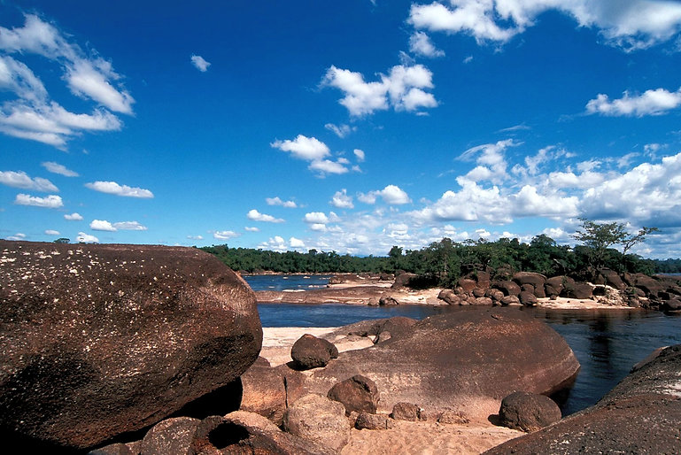
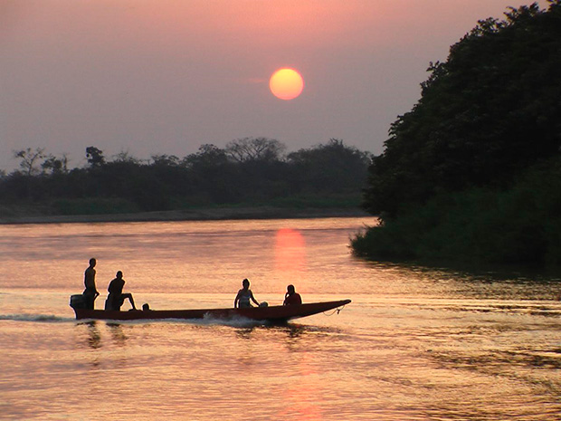
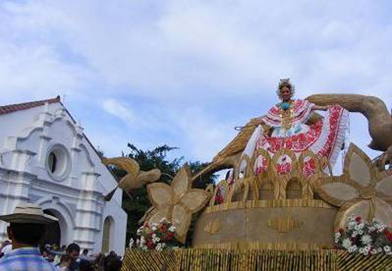
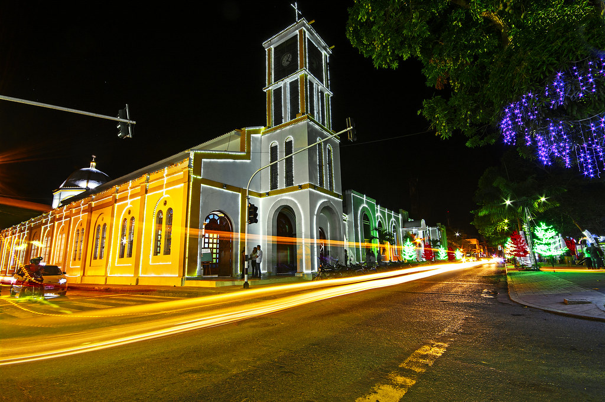
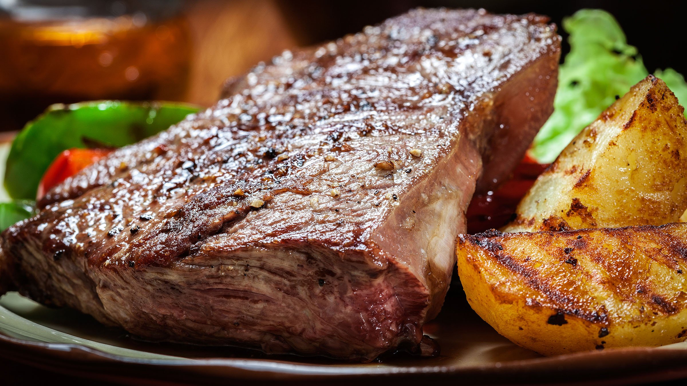
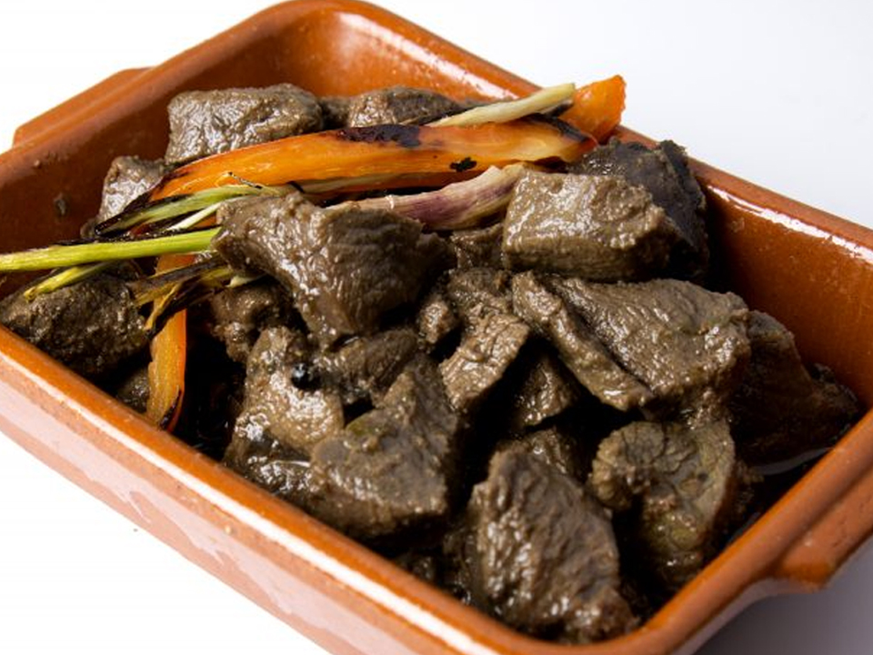
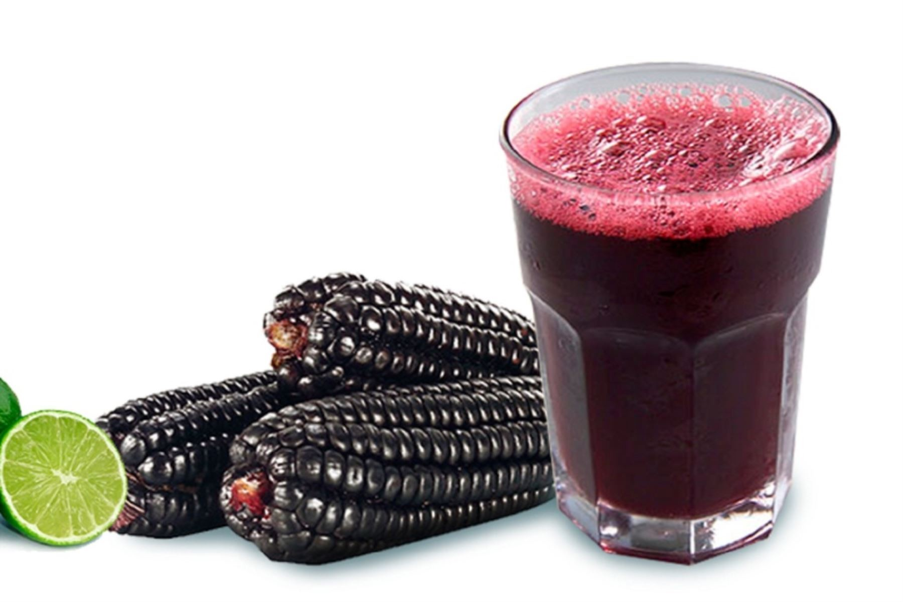

Arauca, ubicado en la región de los Llanos Orientales de Colombia, es un departamento que cautiva por su inmensa biodiversidad y sus paisajes naturales. Uno de los principales atractivos turísticos de la región es el Parque Nacional Natural El Tuparro, conocido por sus vastas llanuras, ríos y una rica fauna que incluye especies como jaguares y delfines rosados. Además, el río Arauca, que da nombre al departamento, es ideal para el ecoturismo, ofreciendo actividades como paseos en bote y pesca. Los turistas también pueden disfrutar de las festividades locales, como el Festival Internacional de la Canción de la Caña de Azúcar, donde la música llanera y el joropo son protagonistas. La ciudad de Arauca, capital del departamento, tiene un encanto particular con su mezcla de arquitectura moderna y tradiciones llaneras.
   La gastronomía de Arauca refleja la influencia de la región llanera, con platos elaborados principalmente a base de carne de res, debido a la gran tradición ganadera de la zona. Uno de los platillos más representativos es la mamona o ternera a la llanera, que se prepara a la brasa y es acompañada de yuca y arroz. Otro plato característico es el arepón, una especie de arepa gruesa rellena de queso, carne o guiso. La carne de monte también es muy popular, preparada con animales silvestres como venado y chigüiro. Además, los llaneros disfrutan de la chicha, una bebida fermentada de maíz que es muy común en las celebraciones tradicionales. Las frutas tropicales como el mango y la guanábana también forman parte esencial de la dieta local, en jugos o postres.
  El sector económico de Arauca se centra principalmente en la ganadería y la agricultura. La ganadería bovina es el pilar de la economía del departamento, con Arauca siendo una de las principales regiones productoras de carne y leche en Colombia. Además, la agricultura está basada en cultivos como el arroz, maíz y yuca. El petróleo es otro de los sectores clave en la economía de Arauca, con importantes yacimientos en la región que contribuyen significativamente a la economía nacional. El comercio con Venezuela también juega un papel importante, aunque se ha visto afectado por la situación política en la frontera. Arauca también está promoviendo el desarrollo del turismo, que tiene un gran potencial debido a su naturaleza exuberante y su rica cultura llanera.